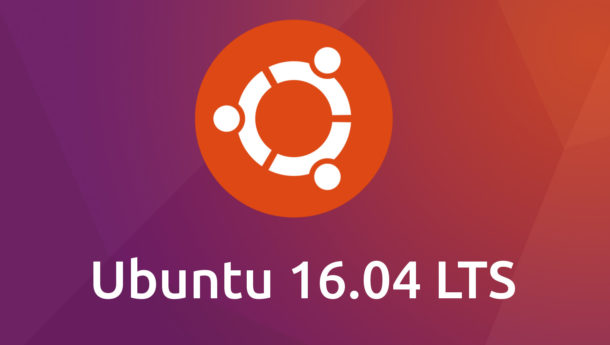

Labs for Ubuntu 16.04 (New)
The SEED labs have been ported to the new Ubuntu16.04 VM. Most of them are still the same (with minor revisions). Here is the summary of the main differences:
- A new VM is created (Ubuntu 16.04). It can be downloaded from the "Lab Setup" page.
- A few labs have been significantly revised (see the list).
- Several new labs are introduced (See the list).
- A new instructor manual is created for these labs. We will be glad to provide a hardcopy of the manual to instructors upon request (only hardcopy will be provided). Here is the table of contents and the cover page of the manual. If you are attending the SEED workshops in the summer, you will get a copy of the manual during the workshop.
{kind=link}
Labs for Ubuntu 12.04 (will be phased out)
These labs have been ported to our new Ubuntu16.04 VM, so they will be gradually phased out. We still keep them here to give instructors time to transition to the new VM. We will no longer send out instructor manuals for these labs. Support for these labs will stop after May 2019.